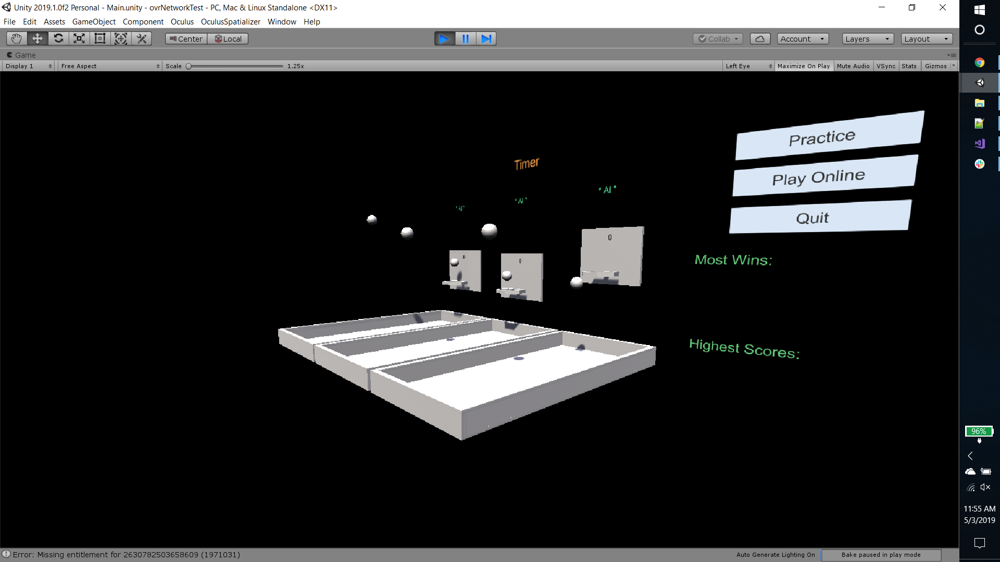
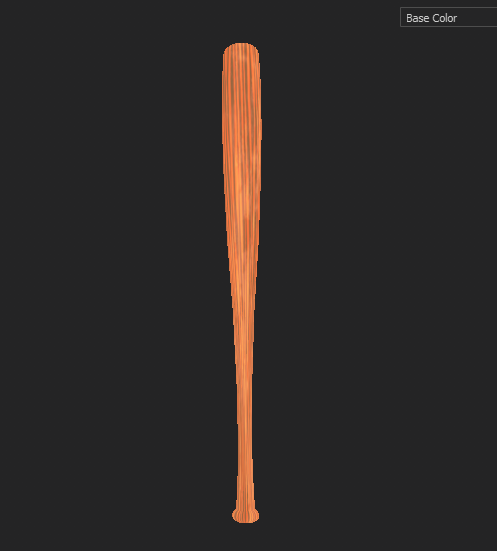
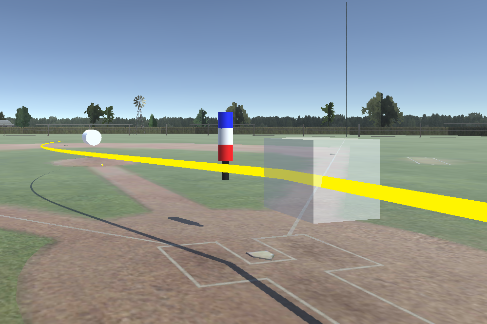
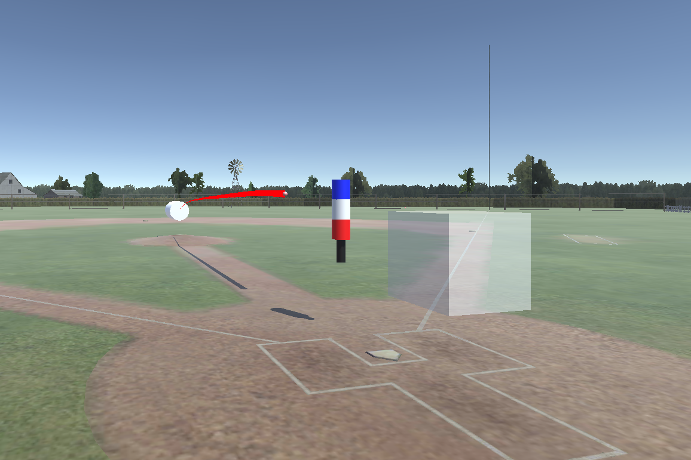
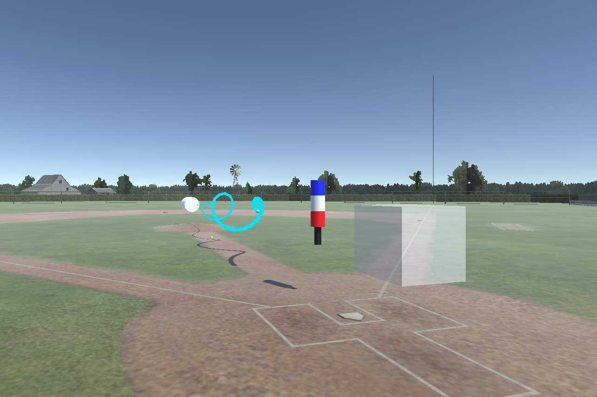

Networking Update
Since unity depreacate UNET in their 2019 pipeline, through the weeks we tried the new unity Multiplayer, Photon, and Oculus Native Platform SDK. The new multiplayer is in develpment, use ECS and lacks of documentations; Photon is a 3rd party networking solution, great in scalability but requires server and requires some extra-cost. Therefore we choose Oculus Platform, which provides convenient and simple Matchmaking and P2P networking api. Hopefully Oculus will update their store interface soon -- for now we are debugging using rift. The SDK performs pretty solid on oculus GO so I'm not expecting too much problems while swtiching platforms in the future.
We were able to get a demo scene working with 2 Oculus Rift headsets using the Oculus P2P framework, which was just as sample demo created by Oculus which allowed players to have a basketball shooting competition over a networked connection. We could not get the networked demo working on the Quest yet due to Oculus account issues which are currently being looked into with the help of the TAs.
Asset Creation
In terms of asset creation, we have decided to use a Stadium Asset Pack as a base for other potential stadiums. The current sadiums look decent, but they are quite low-poly, as most of the assets are transparent planes. Time permitting we would like to add a little more geometry to to make it look more pronounced, as the planar approach can be visually distracting at times, and as seen below, it causes a lot of hard shadows and lighting artifacts.
We have an ititial character design sketches, which will most likely be very low poly, with textured facial fieatures as opposed to modeled geometry to save time on animations. The focus for this week will be on making the glove for the pitcher, and assets that required for specific game modes, such as vfx shaders for home run derby, targets for target practice, and zombies for our zombie survival mode. A stretch goal we also have is to make a locker room that serves as the start menu scene.
Demo Scene
We have created a demo scene using the stadium pack, the bat and the piching script. Currently the batter controls the pitching mechanic with their left hand controller, using the X and Y buttons to cycle through different pitches. They can also use the left thumbstick to move around and adjust their position in relation to the batters box. They can grab the bat with with the righthand middle finger grip and must keep that button pressed in order to hold onto it. They can trigger the pitch with the left controller and swing the bat with the right handed one.
  Gameplay Goals
For next week our goals are to turn the demo scene into actual gameplay modes. Our minimum goal is to have a home run derby mode where with a timer, where you have to see how many home runs you can hit. We will have an automatic pitcher and some sort of ui that shows the time you have left and the number that you have hit.